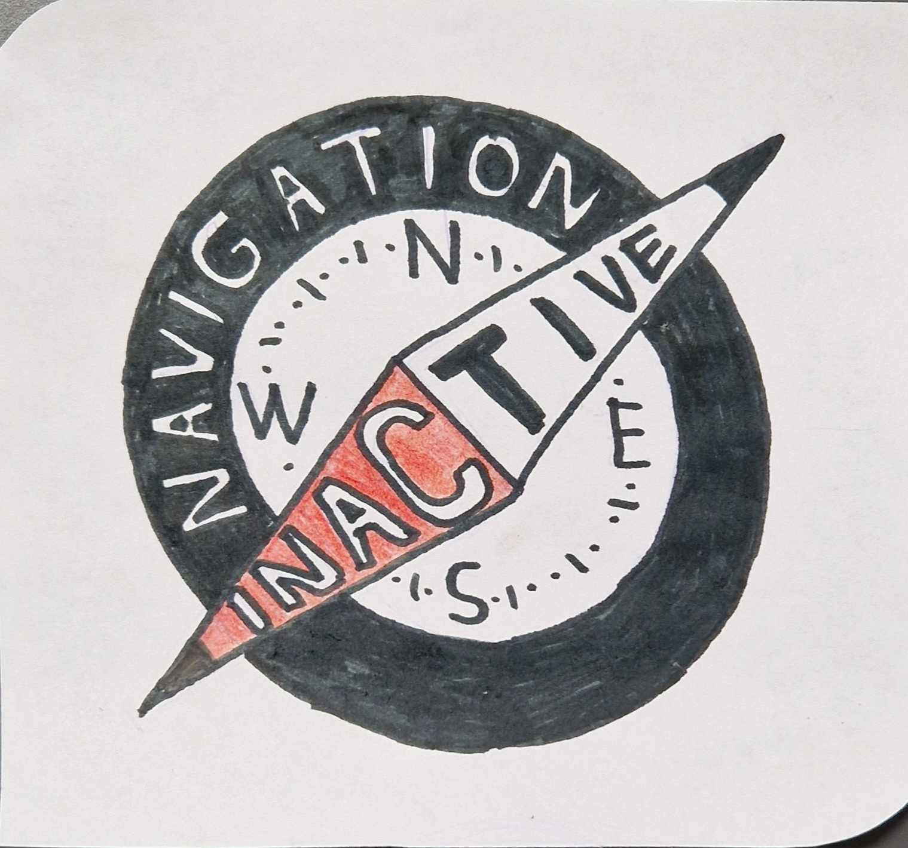

|  |
AboutWe are a hungarian group of close friends and family that started playing together in 2024.
Our songs consist of catchy melodies and usually heavy lyrics written in hungarian and english. Musicmusic Dates2025.12.21, Vecsés Forraltborfőző versenyPhotos & Videosmedia ContactContact us at kis@gmailDOTcom Our Facebook page is here |
||||||